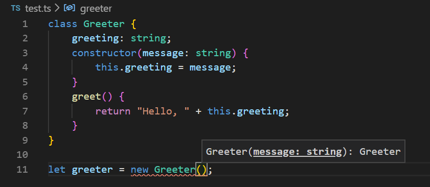
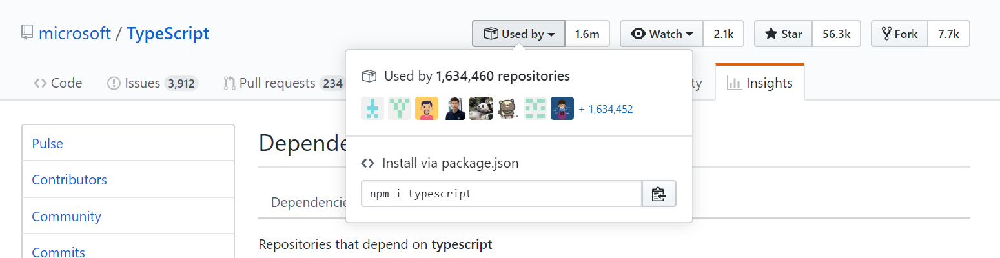
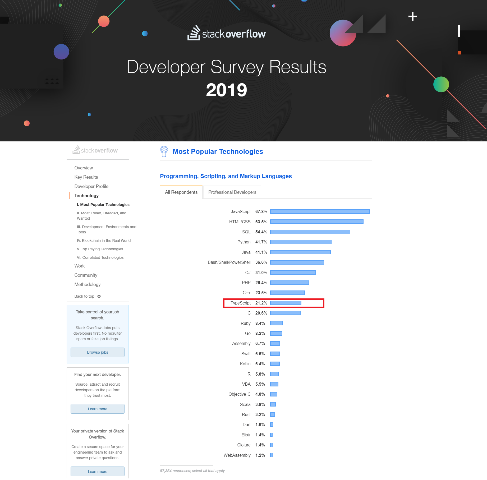
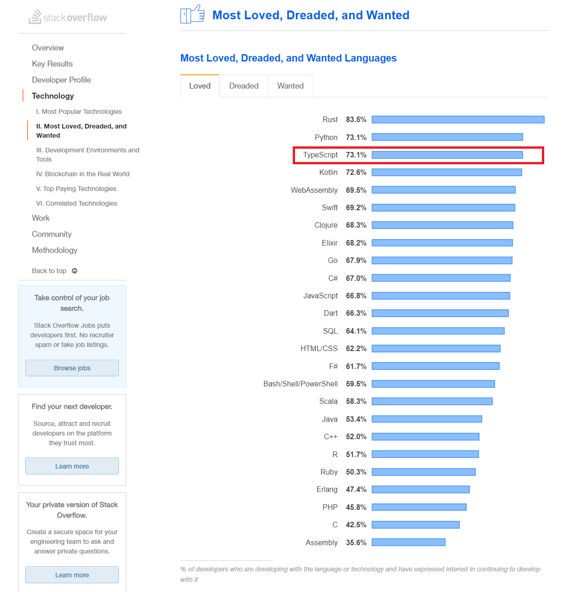

Natalia Volkova
Structure:
- What is it?
- Opportunities
- Problems
- Statistics
- Alternatives
What TypeScript actually is?
- An open-source programming language
- Created by Microsoft in October 2012 (at version 0.8)
- A superset of JavaScript
- Allows static typing
- Interfaces, enums, ...
- Based on the .NET harmony specification
Advantages of TypeScript:
1. Type-checking

Compile-time errors
Advantages of TypeScript:
2. Time-saving
- Mistakes searching
- Editors code suggestions 
- Less tests
Advantages of TypeScript:
3. Increased team performance
- Easier to understand
- “Self-documenting code”
- Easier to refactor
Advantages of TypeScript:
4. New Features + Browser Compatibility
ES6, ES7,... => ES5
Disadvantages of TypeScript
- A compilation step
- A bit difficult to set up
Some Statistics...
Some Statistics...
Some Statistics...
Alternatives of TypeScript
- Flow — the type-checking system from Facebook
- JSDoc — the type-supporting documentation standard
- Other strictly typed languages that compile to JavaScript
- Kotlin
- Rust
- Go
- Elm and Reason